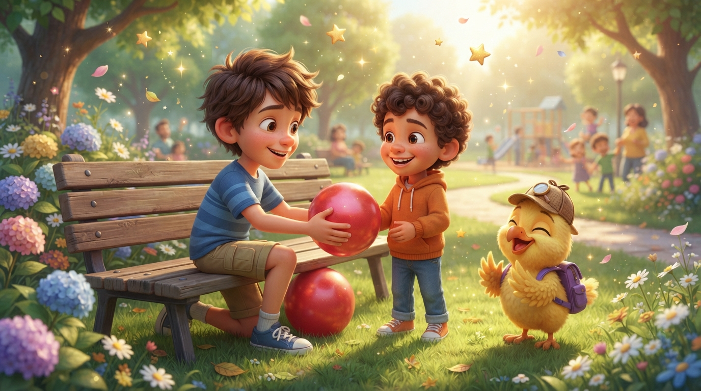

Permainan sedang dijeda sementara. Timer berhenti di 03:00.
Sapaan Detektif Dodo
“Halo teman-teman! Aku Dodo. Yuk, bantu Dodo mencari teman yang membutuhkan bantuan!”
Petualangan Kebaikan #01
Usia 5–6 Tahun • Ramah PAUD
DETEKTIF
KEBAIKAN
Ayo cari teman!
Temukan teman yang membutuhkan bantuan di taman bermain, lalu belajar mengucapkan kata ajaib “Tolong” dan “Terima Kasih” bersama Dodo!
Durasi & Target
3 Menit • 3 Bintang
Detektif Utama: Sahabat Dodo
Misi 1 • Taman Bermain
Yuk, Cari Teman di Taman Bermain
“Coba cari teman yang terlihat kesulitan, yuk!”
Amati gambar taman bermain di bawah ini, lalu klik langsung anak yang sedang kesulitan atau pilih kartunya.
Investigasi Dekat • Bola Tersangkut di Bawah Bangku
Pertanyaan 1 dari 2
Lihat, bola merah teman kita tersangkut di bawah bangku taman. Yuk bantu pilih ucapan yang baik!
Tantangan Moral • Pertanyaan 1 dari 2
“Teman kita kesulitan mengambil bola. Kalau kamu membutuhkan bantuan, apa yang harus kamu katakan?”
Sentuh atau klik satu kartu jawaban yang benar ya!

Teman Saling Membantu
Misi Selesai!
Sahabat Detektif
Selamat! Kamu Adalah Detektif Kebaikan
Detektif Dodo
“Yeay! Teman kita sudah mendapatkan bantuannya. Jangan lupa mengucapkan terima kasih, ya!”
Sekarang yuk berlatih mengucapkan dua kata ajaib bersama guru atau orang tua!
Area Praktik Pengucapan Bersama
AYO UCAPKAN BERSAMA!
Ketuk kartu di bawah ini untuk mendengarkan kata, lalu ucapkan bersama dengan suara jelas dan ramah.
Penghargaan Detektif Cilik
SELAMAT!
KAMU ADALAH DETEKTIF KEBAIKAN!
Medali Emas Kebaikan
3/3 Bintang • Sisa Waktu 03:00